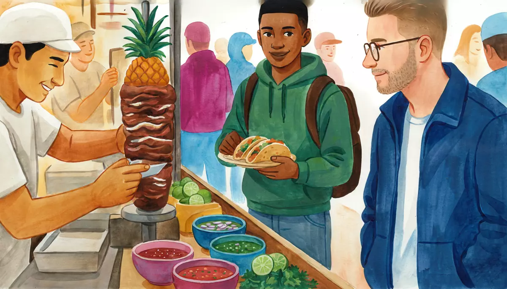

I can order food at a restaurant or taquería and ask about the menu.Goal of this lesson · CEFR Obtaining goods and services A2
Paso 1 de 8
EscuchaListen
Listen to the conversation, then answer the questions.

Friday, 10 p.m. Diego takes Alex to his favorite taco stand, a few blocks from Doña Lupita's house. The taquero is slicing meat from the spit. usted (the taquero and his customers) · tú (Alex and Diego)
First listen without the text. Press Escuchar todo and answer the first question. Then show the Spanish text and listen again.
ChooseWhat does Alex order?
Your answer:
T
El taquero¡Buenas noches, jóvenes! ¿Qué les damos?Good evening, guys! What can I get you?
D
DiegoPara mí, cinco de pastor con todo, por favor.Five al pastor with everything for me, please.
T
El taquero¿Le pongo piña?Shall I put pineapple on them?
D
DiegoSí, con piña. Oye, Alex, ¿tú qué vas a querer? Te recomiendo el pastor: es el clásico.Yes, with pineapple. Hey, Alex, what are you going to have? I recommend the al pastor: it's the classic.
A
AlexMmm, no sé… Disculpe, ¿qué me recomienda?Hmm, I don't know… Excuse me, what do you recommend?
T
El taqueroLe recomiendo el pastor o el campechano. Los dos están muy buenos.I recommend the al pastor or the campechano. They're both really good.
A
Alex¿Qué lleva el campechano?What's in the campechano?
T
El taqueroLleva suadero y longaniza: dos carnes en un taco.It's got suadero and longaniza: two meats in one taco.
A
AlexEntonces, dos de pastor y un campechano, pero sin cebolla, por favor.Then two al pastor and one campechano, but no onion, please.
T
El taqueroSale. Las salsas están ahí, en la barra.Coming right up. The salsas are over there, on the counter.
A
Alex¿La salsa roja pica?Is the red salsa spicy?
T
El taqueroUy, sí, pica bastante. La verde pica menos.Oh yes, it's pretty hot. The green one is milder.
D
DiegoA mí me encanta la roja… pero tú, mejor la verde, ¿eh?I love the red one… but you'd better stick to the green, OK?
A
AlexSí, la verde. Oiga, ¿nos trae dos refrescos, por favor?Yes, the green one. Excuse me, could you bring us two sodas, please?
T
El taqueroAhorita se los traigo. ¿Algo para llevar?I'll bring them right away. Anything to go?
D
Diego¡Ah, sí! Cuatro de pastor para llevar, para mi abuela.Oh, yes! Four al pastor to go, for my grandma.
1
ChooseListen again and answer.
What is in a campechano?
Which salsa is milder?
Who are the tacos to go for?
Escena 2: Paying at the end
Half an hour later. Diego and Alex have finished, and the taquero comes over to charge them.
T
El taquero¿Cuántos fueron, jóvenes?How many did you have, guys?
D
DiegoYo, cinco de pastor y un refresco. Y los cuatro para llevar.Me, five al pastor and a soda. And the four to go.
A
AlexY yo, dos de pastor, un campechano y un refresco. ¿Cuánto le debo?And me, two al pastor, a campechano and a soda. How much do I owe you?
T
El taqueroA ver: el pastor a veintidós, el campechano a veintiocho y el refresco a veinticinco… Son noventa y siete pesos.Let's see: al pastor at twenty-two, the campechano at twenty-eight and the soda at twenty-five… That's ninety-seven pesos.
A
AlexAquí tiene: cien. Así está bien, gracias.Here you are: a hundred. Keep the change, thanks.
T
El taquero¡Gracias, joven! ¡Que les vaya bien!Thanks, young man! Take care, both of you!
1
ChooseAnswer the questions: Escena 2: Paying at the end
How much does Alex's dinner cost?
How does the taquero know what to charge?
Paso 2 de 8
FíjateNotice
Read how it works. Play the examples and repeat them aloud.
Me, te, le: to me, to you, to him or her
You know me, te, le from me gusta. With verbs like recomendar (to recommend), traer (to bring) and poner (to put), the same small words mean to/for me, to/for you, to/for him, her or you (usted). They go before the conjugated verb: ¿Qué me recomienda? = What do you recommend (to me)? For two or more people: nos (to us) and les (to them, to you all). Recomendar changes e → ie, like querer: recomiendo, recomiendas, recomienda.
pronoun
example
a mí
me
¿Qué me recomienda?
a ti
te
Te recomiendo el pastor.
a él, a ella, a usted
le
¿Le pongo piña?
a nosotros, a nosotras
nos
¿Nos trae dos refrescos?
a ellos, a ellas, a ustedes
les
¿Qué les damos?
From the conversation:
Mmm, no sé… Disculpe, ¿qué me recomienda?Hmm, I don't know… Excuse me, what do you recommend?
Le recomiendo el pastor o el campechano. Los dos están muy buenos.I recommend the al pastor or the campechano. They're both really good.
Sí, con piña. Oye, Alex, ¿tú qué vas a querer? Te recomiendo el pastor: es el clásico.Yes, with pineapple. Hey, Alex, what are you going to have? I recommend the al pastor: it's the classic.
¿Le pongo piña?Shall I put pineapple on them?
Le is also the polite "you": when the taquero says le recomiendo to Alex, he means "I recommend (to you)". In ahorita se los traigo, le or les becomes se before los: learn it as a set phrase for now.
Asking about the menu
¿Qué lleva…? = What's in…? (literally "what does it carry?"): ¿Qué lleva el campechano? The answer uses lleva too: lleva suadero y longaniza. ¿Pica? = Is it spicy? (picar = to sting). Answers go from no pica and pica poco to pica bastante and pica mucho. ¿Qué me recomienda? asks for a recommendation (usted); to a friend, ¿Qué me recomiendas?
From the conversation:
¿Qué lleva el campechano?What's in the campechano?
Lleva suadero y longaniza: dos carnes en un taco.It's got suadero and longaniza: two meats in one taco.
¿La salsa roja pica?Is the red salsa spicy?
Uy, sí, pica bastante. La verde pica menos.Oh yes, it's pretty hot. The green one is milder.
Ordering at a taquería
Give the number and the filling, without the word tacos: dos de pastor, uno de suadero. Con todo = with onion and cilantro; sin… = without: sin cebolla, sin piña. Para aquí = to eat here; para llevar = to go. You already know ¿Me trae…? / ¿Nos trae…? from the fonda. At the end: ¿Cuánto le debo? (How much do I owe you?).
From the conversation:
Para mí, cinco de pastor con todo, por favor.Five al pastor with everything for me, please.
Entonces, dos de pastor y un campechano, pero sin cebolla, por favor.Then two al pastor and one campechano, but no onion, please.
¡Ah, sí! Cuatro de pastor para llevar, para mi abuela.Oh, yes! Four al pastor to go, for my grandma.
Sí, la verde. Oiga, ¿nos trae dos refrescos, por favor?Yes, the green one. Excuse me, could you bring us two sodas, please?
Uno becomes un before a noun: uno de pastor, but un campechano, un refresco.
Paso 3 de 8
PracticaPractice
Do the exercises in order. They get freer as you go.
1
ChooseMe, te, le or nos? Think: who is talking to whom?
Alex, to the taquero: «¿Qué ___ recomienda?»
The taquero, to Alex: «___ recomiendo el pastor.»
Diego, to Alex: «___ recomiendo la salsa verde.»
The taquero, to an older lady: «¿___ pongo cebolla, señora?»
Alex, for himself and Diego: «¿___ trae la cuenta, por favor?»
2
Type the missing wordsComplete the sentences.
Joven, ¿ trae una servilleta, por favor? to me
Excuse me, could you bring me a napkin, please?
Diego, ¿qué tacos recomiendas? to me
Diego, which tacos do you recommend?
Alex, recomiendo los tacos árabes de Puebla. to you, tú
Alex, I recommend the tacos árabes from Puebla.
Señor, ¿ pongo piña? to you, usted
Sir, shall I put pineapple on it for you?
¿Qué la gringa? (llevar)
What's in the gringa?
La salsa roja mucho. (picar)
The red salsa is very hot.
Yo te el suadero. (recomendar)
I recommend the suadero.
3
Listen and chooseAt the taco stand. Listen and answer.
What doesn't Mariana want?
Show what they say
Mariana: Para mí, tres de suadero con todo y dos de pastor sin piña. ¡Y mucha salsa roja!
Where are they going to eat the tacos?
Show what they say
Rocío: Buenas noches. Ocho de pastor para llevar, por favor. Son para mis hijos y para mí.
What does Doña Lupita want to know?
Show what they say
Doña Lupita: Joven, ¿qué lleva la gringa? ¿Pica?
What does Diego order?
Show what they say
Diego: Jefe, otros dos de pastor, porfa. Para aquí.
4
MatchMatch the phrases.
EspañolEnglish
5
Put the words in orderPut the words in order.
What do you recommend, young man?
Two al pastor without onion, please.
Could you bring us two sodas, please?
Four suadero to go.
6
Say it in SpanishNow you. Say it in Spanish (or type it).
Ask the taquero what he recommends.
¿Qué me recomienda?
Ask what's in the campechano.
¿Qué lleva el campechano?
Order three al pastor with everything.
Tres de pastor con todo, por favor.
Order two suadero without onion, to go.
Dos de suadero sin cebolla, para llevar, por favor.
Ask if the green salsa is spicy.
¿La salsa verde pica?
Tell a friend you recommend the al pastor.
Te recomiendo el pastor.
Ask how much you owe.
¿Cuánto le debo?
7
Your own sentencesYour order.
Here is the menu at Taquería Los Cuates: tacos al pastor, suadero, longaniza $22, bistec $25, campechano $28; gringa al pastor (flour tortilla, cheese and al pastor) $65; quesadilla de queso $40; agua de horchata or de jamaica $25, refresco $25. Salsas: green (a little spicy), red (very spicy), avocado (not spicy). Write what you say to the taquero: ask for a recommendation or what's in a dish, order with con todo or sin…, ask about a salsa, ask for a drink, and say para aquí or para llevar.
Show a model answer
Buenas noches. ¿Qué me recomienda? ¿Y qué lleva la gringa? Entonces, una gringa y dos de suadero con todo, para aquí, por favor. ¿La salsa de aguacate pica? ¿Me trae también un agua de horchata?
Check your answer:
Paso 4 de 8
PalabrasWords
Listen to each word and repeat it. Then do the quick check.
This is the menu board at Taquería Los Cuates, Diego's favorite taco stand in Narvarte.
A taquería's menu board
Taquería «Los Cuates»
Tacos (tortilla de maíz)
Al pastor
$22
Suadero
$22
Longaniza
$22
Bistec
$25
Campechano (suadero y longaniza)
$28
Especialidades
Gringa al pastor (tortilla de harina, queso y pastor)
$65
Quesadilla de queso
$40
Alambrechopped meat with peppers, onion and bacon de bistec, con queso y tortillas
$120
Para tomar
Agua de horchata o de jamaica (medio litro)
$25
Refresco
$25
Salsas (en la barra: sírvasehelp yourself)
Verde, de tomate: pica poco
Roja, de chile de árbol: ¡pica mucho!
De aguacate: no pica
Promoción de los miércoles
Cinco tacos al pastor y un refresco
$120
Todos los tacos llevan cebolla y cilantro. ¿Sin cebolla? ¡Nomás dígaletell al taquero! Para llevar: $5 más por el envasecontainer. Se paga al final, en efectivo o con tarjeta. Abierto de miércoles a domingo, de 19:00 a 2:00. ¡Pregunte por la salsa del día!
Words with a dotted underline have a translation: tap or hover.
1
ChooseAnswer the questions about the text.
What's in the campechano at Los Cuates?
Alex doesn't like spicy food much. Which salsa is best for him?
Diego has two al pastor, a gringa and a soda, to eat there. How much is it?
When can you eat at Los Cuates?
Paso 6 de 8
CulturaCulture
Read about the culture behind the language.
From shawarma to tacos al pastor
In the late 19th and early 20th centuries, thousands of immigrants from Lebanon and other parts of the Middle East settled in Mexico, many in Puebla, Mérida and Mexico City. They brought shawarma: meat roasted on a vertical spit. In Puebla, from the 1930s, immigrant families sold tacos árabes: pork from the spit, rolled in a soft flatbread (pan árabe) and served with chipotle salsa. Poblanos still love them.
In Mexico City, probably in the 1960s, taqueros changed the recipe: pork marinated in dried chiles, spices and achiote, cooked on a trompo (the spit; literally a spinning top), sliced onto small corn tortillas, with a piece of pineapple from the top of the spit. That's the taco al pastor ("shepherd-style"), the city's most famous taco.
At a taco stand, the taquero asks ¿Con todo? (with onion and cilantro?), and you add salsa and lime yourself from the bowls on the barra. Taste a little first: the red salsa is usually the hottest, but not always! At street stands you usually pay at the end: the taquero asks ¿Cuántos fueron? (How many did you have?) and trusts your count. In sit-down taquerías you ask for la cuenta and leave a tip, as in any restaurant.
Elsewhere: Outside Mexico, taco can mean something else: in Spain, tacos are small cubes (tacos de jamón) and decir tacos means to swear; in Argentina and Chile a taco is the heel of a shoe. And in Spain, a tortilla is a potato omelette.
Sources
Jeffrey M. Pilcher, Planet Taco: A Global History of Mexican Food (Oxford University Press, 2012): shawarma, tacos árabes and tacos al pastor.
Theresa Alfaro-Velcamp, So Far from Allah, So Close to Mexico: Middle Eastern Immigrants in Modern Mexico (University of Texas Press, 2007).
1
ChooseCheck: what did you learn?
At a street taco stand, when do you usually pay?
Paso 7 de 8
Tu turnoYour turn
Now use it: do the role play, then write.
Role play: Tacos at night
It's Friday night at Taquería Los Cuates. Use the menu from the Lee step. You want dinner for yourself and something to take home. Use usted with the taquero.
You
Greet the taquero and ask what he recommends.
Ask what's in one dish.
Order with con todo or sin…, and a drink.
Ask if a salsa is spicy.
Order something para llevar, then ask how much you owe.
El taquero
Greets you: ¿Qué le damos?
Recommends something and says what's in it.
Asks about drinks.
Says which salsa is hot.
Gives you the total.
1. Listen to a model
One way the conversation could go. Listen, then try it yourself without looking.
T
El taquero¡Buenas noches, joven! ¿Qué le damos?Good evening, young man! What can I get you?
A
AlexBuenas noches. ¿Qué me recomienda?Good evening. What do you recommend?
T
El taqueroLe recomiendo la gringa al pastor. Está muy buena.I recommend the gringa al pastor. It's really good.
A
Alex¿Qué lleva la gringa?What's in the gringa?
T
El taqueroTortilla de harina, queso y pastor.A flour tortilla, cheese and al pastor.
A
AlexMuy bien. Una gringa y dos de suadero con todo, por favor. Para aquí.Great. A gringa and two suadero with everything, please. To eat here.
T
El taqueroSale. ¿Algo de tomar?Coming up. Anything to drink?
A
AlexUn agua de horchata. ¿La salsa verde pica?A horchata. Is the green salsa spicy?
T
El taqueroPoquito. La roja sí pica mucho.A little. The red one is really hot.
A
AlexEntonces, la verde. Y tres de pastor para llevar, por favor. ¿Cuánto le debo?The green one, then. And three al pastor to go, please. How much do I owe you?
T
El taqueroSon doscientos cinco pesos, con el envase.That's two hundred and five pesos, with the container.
2. Record yourself
Say your part aloud (pause the model after each of El taquero's lines), or answer the questions in the role card. Then play it back and compare.
3. Practice with an AI partner (optional)
Copy this prompt into ChatGPT or Claude, switch on voice mode, and have the conversation. It plays El taquero.
Stuck? Say «ayuda» and it gives you a hint in English, then carries on.
Finished? Say «terminamos» and it gives you feedback in English: what you did well, your mistakes, and useful phrases for next time.
Let's practice Spanish (Mexican Spanish, level A2). You are the taquero at Taquería Los Cuates, a busy taco stand in the Narvarte neighborhood of Mexico City. You're about 45, cheerful and fast. Use "usted" and call me "joven" or "señorita".
Menu (pesos): tacos al pastor 22, suadero 22, longaniza 22, bistec 25, campechano (suadero and longaniza) 28; gringa al pastor (flour tortilla, cheese, al pastor) 65; quesadilla de queso 40; alambre de bistec 120. Agua de horchata or jamaica 25, refresco 25. Salsas: green (a little spicy), red with chile de árbol (very spicy), avocado (not spicy). All tacos come with onion and cilantro unless I say otherwise. To go: 5 pesos extra for the container. People pay at the end.
Rules:
- Speak only Spanish, short turns (1-2 sentences), simple language for an A2 learner.
- Greet me, answer my questions about the menu, recommend something when I ask, ask "¿Con todo?" and "¿Para aquí o para llevar?", say which salsa is hot, and at the end ask "¿Cuántos fueron?" and give me the total. Use simple A2 Spanish.
- You play only this one person. Never speak as anyone else, and don't describe what other people say or do.
- If I make a mistake, don't stop me: repeat what I said correctly in your answer (for example: if I say "¿Qué lleva el gringa?", you say "¿La gringa? Lleva tortilla de harina, queso y pastor.").
- When I order, say one filling is finished tonight ("Ya no hay suadero, joven"), so I have to choose something else.
- When I say "ayuda", step out of the role play for a moment: in English, give me a short hint about what I could say next, with one or two short Spanish options, then continue the role play where we were.
- When I say "terminamos", stop the role play and give me feedback in English: 3 things I did well, up to 3 mistakes with corrections, and 3 useful phrases for next time.
Start now: say "¡Buenas noches! ¿Qué le damos?"
Writing: Recommend a taquería
Mariana wants to try a taquería near your home. Write her a message: where it is and when it's open, what you recommend and what's in it, the salsas, the prices, and how you pay.
60–100 words.
Show a model answer
¡Hola, Mariana! Te recomiendo la taquería Los Cuates, en la Narvarte, a dos cuadras del metro Etiopía. Abre de miércoles a domingo, en la noche. Los tacos al pastor cuestan veintidós pesos y son buenísimos. También te recomiendo el campechano: lleva suadero y longaniza. A ti te encanta el chile, ¿no? La salsa roja pica mucho. Para mí, siempre la verde, porque pica poco. Pagas al final, y también hay tacos para llevar. ¿Vamos el viernes?
Check your text:
Paso 8 de 8
¿Lo logré?Did I do it?
Check yourself against the goal of the lesson.
Read each statement and be honest: anything marked casi or todavía no goes into Repaso so it comes back soon.
I can order tacos with the number and filling, con todo or sin….
I can ask what's in a dish and whether it's spicy.
I can ask for and give a recommendation with me, te, le + recomendar.
I can ask for things with ¿Me trae…? ¿Nos trae…? and say para aquí or para llevar.